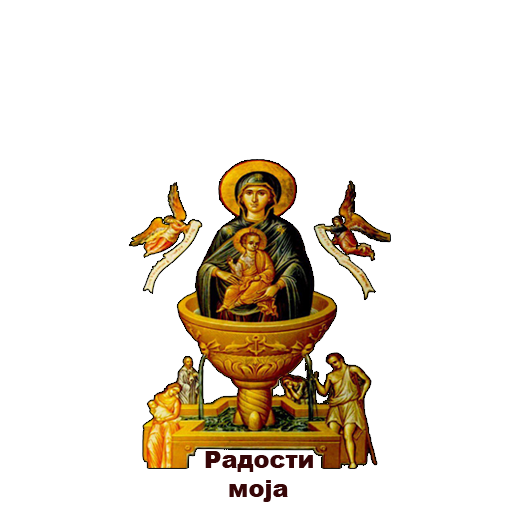

Пресвета Владарко моја Богородице, Својим светим и свемоћним молитвама отерај од мене ништавног и бедног слуге Твога мрзовољу, заборавност, неразумност, нерад и све прљаве, рђаве и хулне помисли из јадног срца мог и из помраченог ума мог, и угаси пламен страсти мојих јер сам убог и јадан, и избави ме од многих и опасних успомена и подухвата, и ослободи ме од свих злих делања, јер си благословена од свих нараштаја, и слави се пречасно име Твоје кроза све векове. Амин